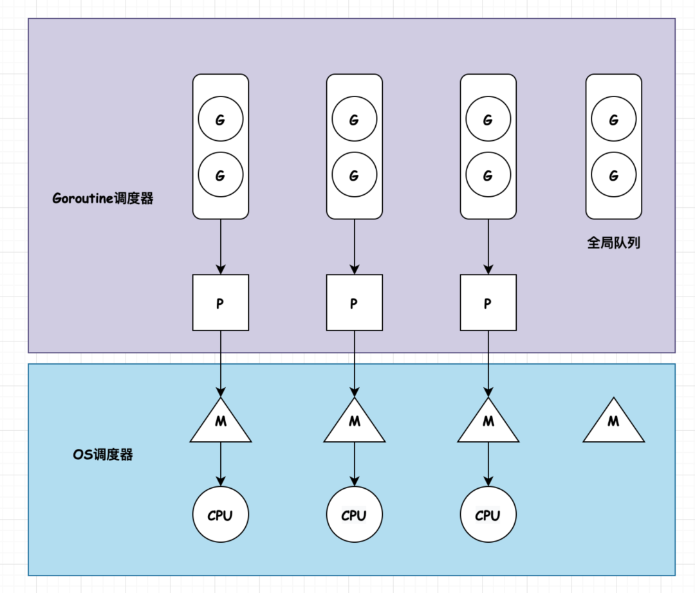
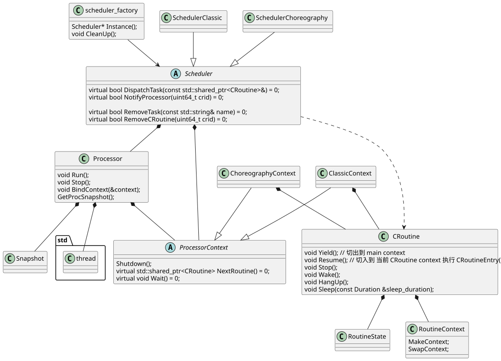
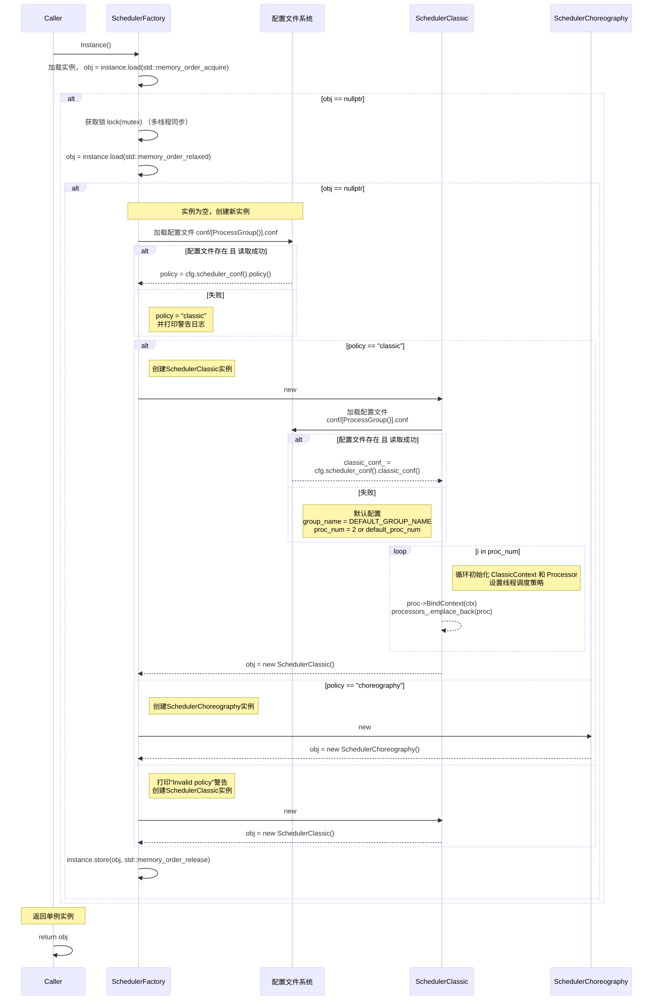

Cyber RT 调度机制(Scheduler)#
概要总结#
- 调度基本上还是使用 linux的调度（SCHED_OTHER、SCHED_RR、SCHED_FIFO）
- 添加了 cgroup 设置（亲核性）和用户态协程（CRoutine）
- Processor 是协程调度的逻辑单元，实际运行在系统线程上
- 调度器 SchedulerClassic、SchedulerChoreography
Cyber RT的改进#
实时操作系统#
- 实时操作系统，通过给linux打实时补丁，支持抢占。
- lowlatency , PREEMPT_RT
- 中断绑定，摄像头，激光雷达，串口等外设需要不停的处理中断，因此可以绑定中断处理程序在一个核上。
- 通过epoll 实现，绑定 fd;
- 资源限制&优先级
- Cgroup是 Linux 内核的一个特性，用于限制、记录和隔离一组进程的资源使用（CPU、内存、磁盘 I/O、网络等）。
协程#
协程。用户态的线程，由用户控制切换。协程的定义可以参考go语言中的GMP 模型
- M，Machine，表示系统级线程，goroutine 是跑在 M 上的。线程想运行任务就得获取 P，从 P 的本地队列获取 G，P 队列为空时，M 也会尝试从全局队列拿一批G放到P的本地队列，或从其他P的本地队列偷一半放到自己P的本地队列。M运行G，G执行之后，M会从P获取下一个G，不断重复下去。
- P，processor，是 goroutine 执行所必须的上下文环境，可以理解为协程处理器，是用来执行 goroutine 的。processor 维护着可运行的 goroutine 队列，里面存储着所有需要它来执行的 goroutine。
- G，goroutine，协程
协程相对线程的优势#
- 系统消耗少。线程的切换用户态->中断->内核态，协程的切换只在用户态完成，减少了系统开销。
- 轻量。协程占用资源比线程少，一个线程往往消耗几兆的内存。

调度器模块类图#

{width=100%}- 类图里面为了方便查看，所以没有把所有函数展示出来
调度器实例#
- SchedulerClassic 和 SchedulerChoreography ；
- 通过 Instance() 获取 单实例；
- 读取 conf/xx.conf 指定配置文件 初始化；
启动流程序列图#

{width=100%}sequenceDiagram
participant Caller
participant SchedulerFactory
participant FS as 配置文件系统
Caller ->> SchedulerFactory: Instance()
SchedulerFactory ->> SchedulerFactory: 加载实例， obj = instance.load(std::memory_order_acquire);
alt obj == nullptr
SchedulerFactory ->> SchedulerFactory : 获取锁 lock(mutex) （多线程同步）
SchedulerFactory ->> SchedulerFactory : obj = instance.load(std::memory_order_relaxed);
alt obj == nullptr
Note over SchedulerFactory, FS: 实例为空，创建新实例
SchedulerFactory ->> FS : 加载配置文件 conf/[ProcessGroup()].conf
alt 配置文件存在 且 读取成功
FS -->> SchedulerFactory : policy = cfg.scheduler_conf().policy();
else 失败
Note right of SchedulerFactory: policy = "classic"<br>并打印警告日志
end
alt policy == "classic"
Note right of SchedulerFactory: 创建SchedulerClassic实例
SchedulerFactory ->> SchedulerClassic: new
SchedulerClassic ->> FS: 加载配置文件 <br> conf/[ProcessGroup()].conf
alt 配置文件存在 且 读取成功
FS -->> SchedulerClassic : classic_conf_ = <br> cfg.scheduler_conf().classic_conf();
else 失败
Note left of SchedulerClassic: 默认配置<br>group_name = DEFAULT_GROUP_NAME <br> proc_num = 2 or default_proc_num
end
loop i in proc_num
Note right of SchedulerClassic: 循环初始化 ClassicContext 和 Processor <br> 设置线程调度策略
SchedulerClassic -->> SchedulerClassic: proc->BindContext(ctx) <br> processors_.emplace_back(proc)
end
SchedulerClassic -->> SchedulerFactory: obj = new SchedulerClassic();
else policy == "choreography"
Note right of SchedulerFactory: 创建SchedulerChoreography实例
SchedulerFactory ->> SchedulerChoreography: new
SchedulerChoreography -->> SchedulerFactory: obj = new SchedulerChoreography();
else
Note right of SchedulerFactory: 打印“Invalid policy”警告<br>创建SchedulerClassic实例
SchedulerFactory ->> SchedulerClassic: new
SchedulerClassic -->> SchedulerFactory: obj = new SchedulerClassic();
end
SchedulerFactory ->> SchedulerFactory: instance.store(obj, std::memory_order_release)
end
end
Note over Caller: 返回单例实例
Caller ->> Caller: return obj添加任务流程序列图#
以 SchedulerClassic 作为实例介绍
sequenceDiagram
Caller ->> Scheduler : CreateTask
Scheduler ->> GlobalData : 获取 task_id , <br> 任务名的hash值(处理了哈希冲突)
GlobalData ->> Scheduler : task_id = GlobalData::RegisterTaskName(name);
alt 分发任务 DispatchTask(cr)成功
Scheduler ->> SchedulerClassic : DispatchTask(cr)
Note over SchedulerClassic,ClassicContext: 任务cr 加入队列
SchedulerClassic ->> ClassicContext : cr_group_[cr->group_name()] <br> .at(cr->priority()).emplace_back(cr);
SchedulerClassic ->> ClassicContext : 通知 Notify(cr->group_name());
SchedulerClassic ->> Scheduler : return true
else 失败
Scheduler ->> Caller : return false
end
opt visitor != nullptr
Note over Scheduler: visitor 在 <br> CreateRoutineFactory 过程中设置
Scheduler ->> Scheduler : 添加数据通知回调
end
Scheduler ->> Caller : return true
SchedulerClassic#
- 配置文件示例 ：cyber/conf/example_sched_classic.conf
- 按 group 组分配 cpu_ids , 线程调度策略 ，线程优先级
- 组内 tasks 再设置 协程优先级。
- 优先级队列 cr_group_,
unordered_map<group_name,array<vector<CRoutineSPtr>,20>> - array index 为优先级 0~19；
- 按照 分组名 优先级 添加到队列；
- 默认其他任务 放到 groups(0) 中运行；
/// cyber/scheduler/policy/scheduler_classic.cc
if (cr_confs_.find(cr->name()) != cr_confs_.end()) {
ClassicTask task = cr_confs_[cr->name()];
cr->set_priority(task.prio());
cr->set_group_name(task.group_name());
} else {
// croutine that not exist in conf
// 默认其他任务 放到 groups(0) 中运行
cr->set_group_name(classic_conf_.groups(0).name());
}
- SchedulerChoreography
- 配置文件示例 ：cyber/conf/example_sched_choreography.conf
- 设定task 绑定特定 执行器（processor）运行；
- 默认其他任务 放到 pool_processor 中运行；
- cr_queue_ ,
std::multimap<uint32_t(priority), std::shared_ptr<CRoutine>, std::greater<uint32_t>>- 按优先级排序(降序排序，从大到小) 的 任务 multimap；
/// cyber/scheduler/policy/scheduler_choreography.cc
// Enqueue task.
uint32_t pid = cr->processor_id();
if (pid < proc_num_) {
// Enqueue task to Choreo Policy.
// 插入到指定执行器
static_cast<ChoreographyContext*>(pctxs_[pid].get())->Enqueue(cr);
} else {
// Check if task prio is reasonable.
if (cr->priority() >= MAX_PRIO) {
AWARN << cr->name() << " prio great than MAX_PRIO.";
cr->set_priority(MAX_PRIO - 1);
}
cr->set_group_name(DEFAULT_GROUP_NAME);
// Enqueue task to pool runqueue.
// 插入到 pool
{
WriteLockGuard<AtomicRWLock> lk(
ClassicContext::rq_locks_[DEFAULT_GROUP_NAME].at(cr->priority()));
ClassicContext::cr_group_[DEFAULT_GROUP_NAME]
.at(cr->priority())
.emplace_back(cr);
}
}
按顺序 取出准备好的(READY) CRoutine任务
/// cyber/scheduler/policy/choreography_context.cc
std::shared_ptr<CRoutine> ChoreographyContext::NextRoutine() {
if (cyber_unlikely(stop_.load())) {
return nullptr;
}
ReadLockGuard<AtomicRWLock> lock(rq_lk_);
for (auto it : cr_queue_) {
auto cr = it.second;
if (!cr->Acquire()) {
continue;
}
if (cr->UpdateState() == RoutineState::READY) {
// 返回任务
return cr;
}
cr->Release();
}
return nullptr;
}
- 优先级队列常见 饥饿问题，低优先级任务可能会得不到处理。
- 改进的话可以 添加超时机制，将 长时间得不到处理 的 低优先级任务 优先级进行提高；
内部线程processor#
- 异步日志： scheduler::Instance()->SetInnerThreadAttr("async_log", thread);
- io epoll: scheduler::Instance()->SetInnerThreadAttr("io_poller", &thread_);
- 时间轮（定时器）： scheduler::Instance()->SetInnerThreadAttr("timer", &tick_thread_);
- 共享内存数据分发： scheduler::Instance()->SetInnerThreadAttr("shm_disp", &thread_);
组件添加任务#
Component#
- Proc 消息驱动执行；
- 主要用 Component\
作为基类继承 , 其他多个数据的模板用的少，多个数据涉及等待准备问题； - Init 会通过CreateRoutineFactory\
注册 while(1) 的 CRoutine (node_->Name()) , 循环等 msg 后 执行 Proc; - 上述操作在 运行模式为 MODE_REALITY 下执行；
- 运行模式为 仿真 和其他消息是一样通过reader回调处理的；
- 其他消息接收通过reader注册；
- reader 会创建 CRoutine 处理任务 （node_name +"_"+ channel_name）
- 调度配置 主要还是 Proc(msg) 任务的 核绑定 和 调度优先级配置；
- 进程内消息传输 信号槽（signal & slot）;
- 进程间，远程 共享内存（shm）, FastDDS
TimerComponent#
- Initialize() 注册 Proc() 任务到定时器；
- 子类继承并 override Proc();
- 时间轮 + cyber::Async 将 任务callback 添加到 TaskManager 中的 task_queue;
- TaskManager Instance 初始化时会 根据 TaskPoolSize 创建多个CRoutine , 并循环等待取出 task_queue 中的task 执行；
- 可能存在的问题：
- 如果队列阻塞 同一组件 不同时间的 Proc() 同时进入 TaskPool 中执行，无法确保 其执行的先后顺序；
- 该情况下 会造成 传感器数据时间戳 乱序；
参考链接#
- source code : https://github.com/ApolloAuto/apollo.git
- tag : v8.0 commit 348c555c57975604c7594934450edb82f510a3e9
- Cyber RT 调度介绍文档链接：https://apollo.baidu.com/docs/apollo/latest/md_docs_2_xE6_xA1_x86_xE6_x9E_xB6_xE8_xAE_xBE_xE8_xAE_xA1_2_xE8_xBD_xAF_xE4_xBB_xB6_xE6_xA0_xB8_0a2e5ca90630272bee94e1ef9891d6ab.html